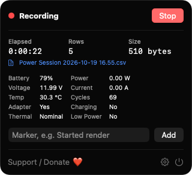
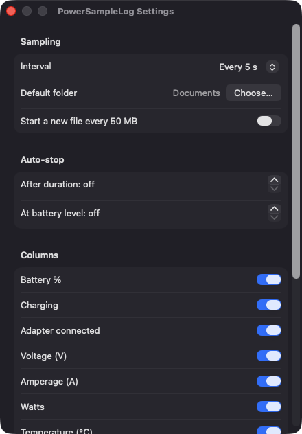
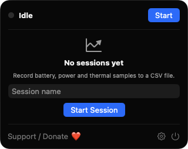

Battery, watts and temperature
Each row records percent, charging state, voltage, amperage, computed watts, temperature and cycle count. Watts are negative while discharging.
Open source · macOS 14+ · Universal binary · System Monitoring
PowerSampleLog lives in your menu bar and writes battery, wattage and thermal readings to a CSV file at the interval you choose. Press Option-Command-L to start or stop.
Free & MIT licensed · Apple Silicon & Intel · Latest release

Features
Everything you need to turn a battery or charger test into a clean time series, and nothing you don't.
Each row records percent, charging state, voltage, amperage, computed watts, temperature and cycle count. Watts are negative while discharging.
Choose 1, 5, 10 or 60 second intervals, and pick which columns to record. Timestamps are ISO 8601 with your local offset.
Add a note such as Started render to line up events with the data. Commas, quotes and line breaks are escaped so columns stay intact.
End a session after a set number of minutes or when the battery reaches a level you choose. A row notes when auto-stop triggers.
Name each session and pick its location. Rows are flushed as they are written, files can rotate at 50 MB, and nothing is overwritten without asking.
Option-Command-L starts or stops recording and Option-Command-M adds a marker, from any app. Sleep gaps are marked with a GAP row on wake.
Screenshots


Install
PowerSampleLog is open source and not notarized with a paid Apple Developer ID, so macOS needs one extra step the first time.
xattr -cr /Applications/PowerSampleLog.app
Download
Free, forever. Built for macOS 14 Sonoma or newer, Apple Silicon and Intel.
Not notarized: on first launch right-click PowerSampleLog.app → Open.
FAQ
Yes. It is released under the MIT license, has no accounts, ads or subscriptions, and the full source is on GitHub. If it is useful, there is an optional Support button in the app.
No. Battery data comes from the AppleSmartBattery registry entry, thermal state from the system, and the shortcuts use Carbon hot keys. It never asks for Accessibility, Screen Recording or Microphone access.
Only in the CSV files you choose, in the save panel or in the default folder you set in Settings. The app has no network access and no server, so nothing leaves your Mac.
Notarization requires a paid Apple Developer account, and this is a free project. Right-click the app and choose Open once to approve it, or build it yourself from source with Xcode and XcodeGen.
Yes. PowerSampleLog was generated by Claude Code from a written spec as a clean-room reimplementation, with no code or assets from any commercial app. The full source is on GitHub under MIT, so you can read every line before you run it. It has had less human review than a hand-written app, so bug reports are welcome.
Support ❤️
PowerSampleLog is a free, open-source alternative to paid utilities. If it earns a spot on your Mac, a coffee keeps the updates coming.
☕ Support Or on Ko-fi